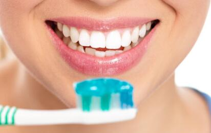
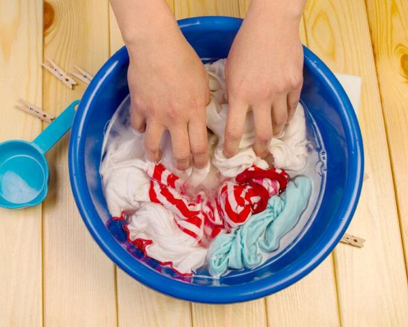
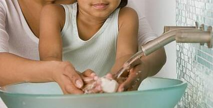
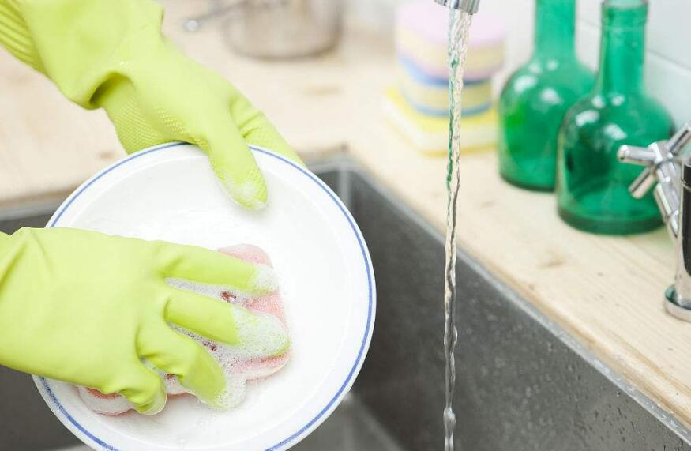
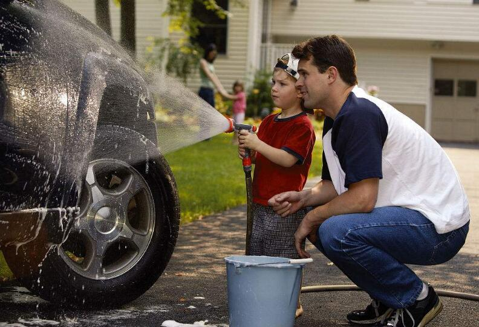
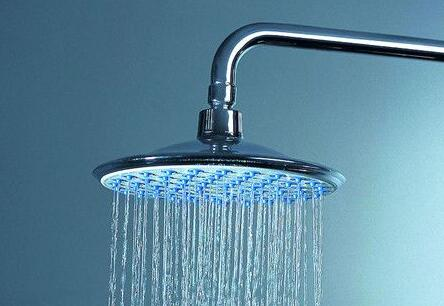
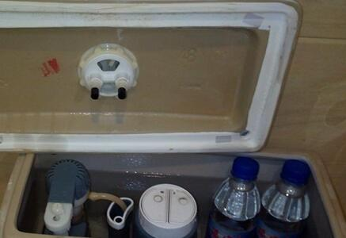
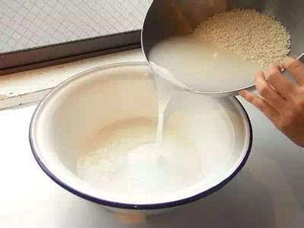

节水方法
- 
刷牙
口杯接水，3口杯共用水约0．6升。三口之家每日两次，每月可节水486升。
- 
洗衣
衣服集中一起洗：衣服太少不洗，等多了以后集中起来洗，也是省水的办法。
- 
洗手
洗手洗脸用水用盆接，之后的冲厕所。
- 
饮食
先用纸擦除炊具、食具上的油污，再洗涤；控制水龙头流量。
- 
洗车
用水桶盛水洗车；使用洗涤水、洗衣水洗车；使用节水喷雾水枪冲洗。
- 
洗浴
间断放水淋浴，搓洗时及时关水，避免过长时间冲淋。盆浴后的水可用于洗车、冲洗厕所、拖地等。
- 
马桶
可以往马桶水箱中放入一个装满水的500毫升水瓶或一块砖头，每次冲水就可以减少水量。
- 
淘米
淘完米后，可将淘米水进行洗碗、冲厕所和浇灌花草，这样洗碗还可使碗上的油污更少。
节约用水